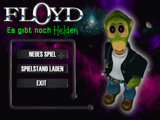
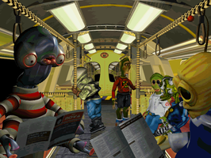
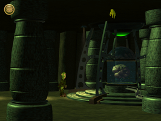

Floyd
Dieser Artikel wurde für die folgenden Ubuntu-Versionen getestet:
Ubuntu 16.04 Xenial Xerus
Ubuntu 14.04 Trusty Tahr
Zum Verständnis dieses Artikels sind folgende Seiten hilfreich:
Um das Adventure Spiel Floyd: Es gibt noch Helden unter Ubuntu spielen zu können, verwendet man ScummVM [4]. Jedoch sind einige Vorbereitungen notwendig bis man in den Genuss des Point-and-Click-Adventures kommt. Je nach verwendeter Version von ScummVM wird das Videoformat des Spiels nicht unterstützt und somit können die Zwischensequenzen nicht ohne Konvertierung wiedergegeben werden. Seit ScummVM 0.13 wird der Codec mittlerweile unterstützt und die zeitaufwändige Konvertierung kann entfallen.
Im Folgenden wird der Vorgang für die 4-CD-Version beschrieben. Der Unterschied zur Version mit 2 CDs besteht lediglich in der besseren Qualität der Videos.
|  |
| Menue |
|  |
| Intro |
|  |
| Spielszene |
Installation¶
Damit einige der benötigten Dateien aus den komprimierten Cabinet-Dateien entpackt und auf die Festplatte kopiert werden, muss das Spiel temporär in der Wine-Umgebung [1] installiert werden. Dies geschieht indem die SETUP.EXE von CD1 mit Wine gestartet wird.
wine SETUP.EXE
CD¶
Als nächstes müssen die Dateien Voices.wav von CD 1 bis CD 4 ins Floyd-Verzeichnis kopiert und in Voices1.wav bis Voices4.wav umbenannt werden. Weiterhin müssen alle *.VGA, *.vga, *.SMK und *.smk Dateien von CD 1 bis CD 4 ins Floyd-Verzeichnis kopiert werden.
GOG.com¶
Die Version von der Vertriebsplattform nach dem Erwerb herunterladen. Dies sind die Dateien setup_the_feeble_files_2.0.0.5.exe, setup_the_feeble_files_2.0.0.5-1.bin und setup_the_feeble_files_2.0.0.5-2.bin. Die benötigten Dateien entpacken [3]:
innoextract setup_the_feeble_files_2.0.0.5.exe
Den Ordner app anschließend in Floyd umbenennen und nach ~/Spiele verschieben. Nicht benötigte Dateien können gelöscht werden. Hier den Vorgaben folgen.
Hinweis:
Das Spiel liegt nur in französischer und englischer Sprache vor.
ScummVM¶
Wenn alles geklappt hat, kann man nun das Floyd-Verzeichnis unter ScummVM [2] hinzufügen und das Spiel sollte laufen. Es werden jedoch nicht alle Dateien in dem Ordner zum Spielen benötigt. Wer die Dateien woanders hin kopieren oder auf eine Floyd-ScummVM-DVD brennen möchte, benötigt nur folgende Dateien:
*.VGA
GAME22
SAVE.999
TABLES*
TBLLIST
*.WAV
*.SMK
Insgesamt sollten dies 1.314 Objekte sein (2,3 GB).

Infobox¶
| Floyd - Es gibt noch Helden | |
| Originaltitel: | The Feeble Files |
| Genre: | Adventure |
| Sprache: |   |
| Veröffentlichung: | 1997 / 2001 / 2002 |
| Publisher: | Bomico / MacPlay / Adventuresoft |
| Systemvoraussetzungen: | >=75 MHz / >= 16 MB RAM / mind. 25 MB Festplattenspeicher / SVGA-Grafikkarte |
| Medien: | CD (2) / CD (4) |
| Strichcode / EAN / GTIN: | 5026924000440 |
| Läuft mit: | ScummVM |

- Erstellt mit Inyoka
-
 2004 – 2017 ubuntuusers.de • Einige Rechte vorbehalten
2004 – 2017 ubuntuusers.de • Einige Rechte vorbehalten
Lizenz • Kontakt • Datenschutz • Impressum • Serverstatus -
Serverhousing gespendet von